결론: 다섯 동작 모두 실제로 수행됩니다. 1차 시험에서 협동 운반이 2/2 실패해 원인 2가지를 고쳤고, 수정 후 운반은 4/4(재시험 2 + 최종 2) 성공했습니다. 최종 시험의 실패 2건(#3, #7)은 시뮬 집게에서 블록이 미끄러지거나 튕겨 나간 경우이고, 둘 다 카메라 검증이 잡아 실패로 보고했습니다(거짓 성공 0건).
| 동작 | 내용 | 명령 (2회) |
|---|---|---|
| ① 자동 배정 이동 | 닿는 팔 중 가까운 팔이 자동으로 수행 | 빨간 블록을 왼쪽 뒤 구석으로 옮겨 초록 블록을 오른쪽 앞으로 옮겨 |
| ② 팔 지정 이동 | "왼팔로/오른팔로" 지정한 팔이 수행 | 왼팔로 노란 블록을 왼쪽으로 옮겨 오른팔로 파란 블록을 오른쪽 뒤 구석으로 옮겨 |
| ③ 쌓기 | 블록을 다른 블록 위에 올림 | 빨간 블록을 노란 블록 위에 쌓아 파란 블록을 초록 블록 위에 쌓아 |
| ④ 팔 간 전달 | 한 팔로 안 되는 이동을 공유 지점을 거쳐 2단계로 | 빨간 블록을 오른쪽으로 옮겨 파란 블록을 왼쪽으로 옮겨 |
| ⑤ 양팔 협동 운반 | 그릇(트레이) 양끝 손잡이를 두 팔이 함께 들어 옮김 | 그릇을 두 팔로 들어서 뒤로 옮겨 쟁반을 양손으로 들어서 가운데로 옮겨 |
매 회차 시작 전에 블록·트레이를 초기 위치로 되돌림(④는 트레이를 작업 영역 밖으로, ⑤-2는 트레이를 뒤쪽 x = 0.10에서 시작). 판정: 플래너 결과(손목 카메라 집기 확인 + 탑뷰 카메라로 목표 30 mm 이내 확인)와 Gazebo 실제 위치. 쌓기는 위 블록 높이 0.0375 m로 확인.
| # | 동작 | 명령 | 팔 | 결과 | 오차 [mm] | 최대 기울기 [°] | LLM [s] | 전체 [s] | 실패 원인 |
|---|---|---|---|---|---|---|---|---|---|
| #1 | ① 자동 배정 이동 | 빨간 블록을 왼쪽 뒤 구석으로 옮겨 | 왼팔 | 성공 | 8.5 | 2.3 | 18.6 | ||
| #2 | ① 자동 배정 이동 | 초록 블록을 오른쪽 앞으로 옮겨 | 오른팔 | 성공 | 21.7 | 3.0 | 18.6 | ||
| #3 | ② 팔 지정 이동 | 왼팔로 노란 블록을 왼쪽으로 옮겨 | 왼팔 | 실패 | 41.4 | 2.1 | 19.6 | 카메라 검증 실패: 놓는 중 미끄러짐 | |
| #4 | ② 팔 지정 이동 | 오른팔로 파란 블록을 오른쪽 뒤 구석으로 옮겨 | 오른팔 | 성공 | 8.5 | 5.5 | 22.8 | ||
| #5 | ③ 쌓기 | 빨간 블록을 노란 블록 위에 쌓아 | 왼팔 | 성공 | 6.4 | 3.3 | 21.5 | ||
| #6 | ③ 쌓기 | 파란 블록을 초록 블록 위에 쌓아 | 오른팔 | 성공 | 8.8 | 2.5 | 19.6 | ||
| #7 | ④ 팔 간 전달 | 빨간 블록을 오른쪽으로 옮겨 | 왼팔 → 오른팔 | 실패 | 275.0 | 6.5 | 42.7 | 카메라 검증 실패: 블록이 튕겨 나감 | |
| #8 | ④ 팔 간 전달 | 파란 블록을 왼쪽으로 옮겨 | 왼팔 → 오른팔 | 성공 | 6.9 | 1.8 | 39.2 | ||
| #9 | ⑤ 양팔 협동 운반 | 그릇을 두 팔로 들어서 뒤로 옮겨 | 양팔 | 성공 | 7.7 | 2.4 | 2.6 | 50.1 | |
| #10 | ⑤ 양팔 협동 운반 | 쟁반을 양손으로 들어서 가운데로 옮겨 | 양팔 | 성공 | 9.0 | 4.7 | 4.2 | 48.0 |
| 동작 | 1차 시험 | 수정 후 ⑤ 재시험 | 최종 시험 |
|---|---|---|---|
| ① 자동 배정 이동 | 2/2 | – | 2/2 |
| ② 팔 지정 이동 | 2/2 | – | 1/2 |
| ③ 쌓기 | 2/2 | – | 2/2 |
| ④ 팔 간 전달 | 2/2 | – | 1/2 |
| ⑤ 양팔 협동 운반 | 0/2 | 2/2 | 2/2 |
| 합계 | 8/10 | 2/2 | 8/10 |
roi_margin 0.12): 같은 위치에서 2.6 mm, 폭 0.059 m. 보드가 블록으로 잘못 잡히지 않음을 확인.carry_release 1.0). 블록 쌓기용 부분 열림은 그대로.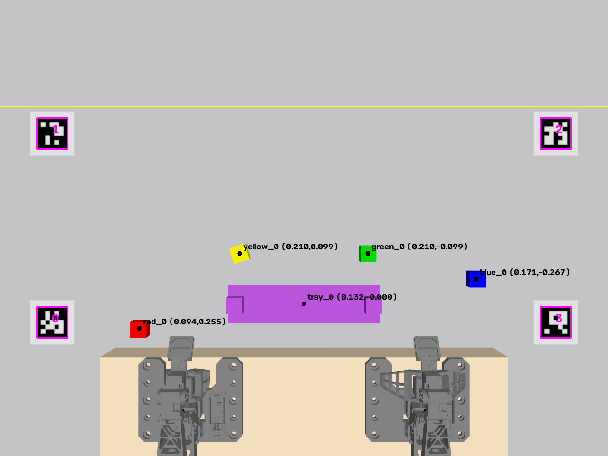
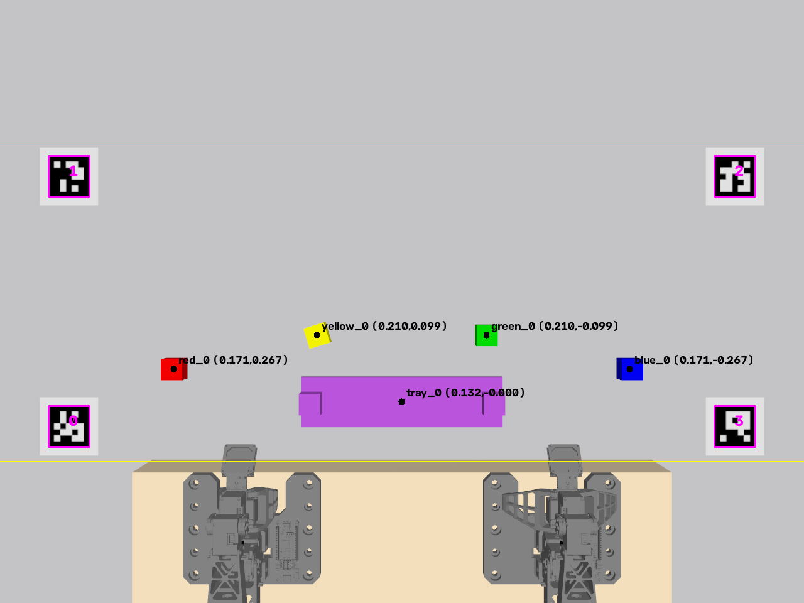
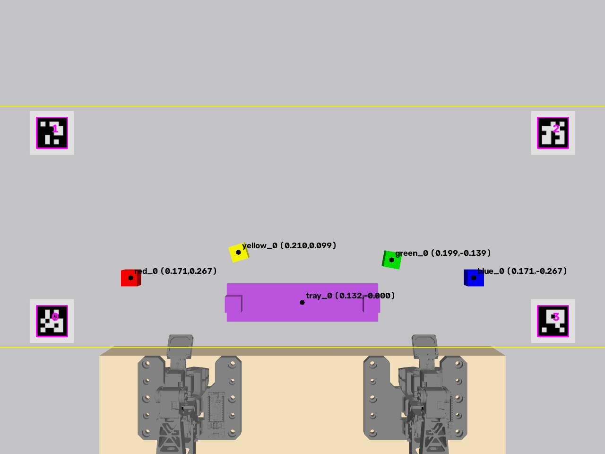
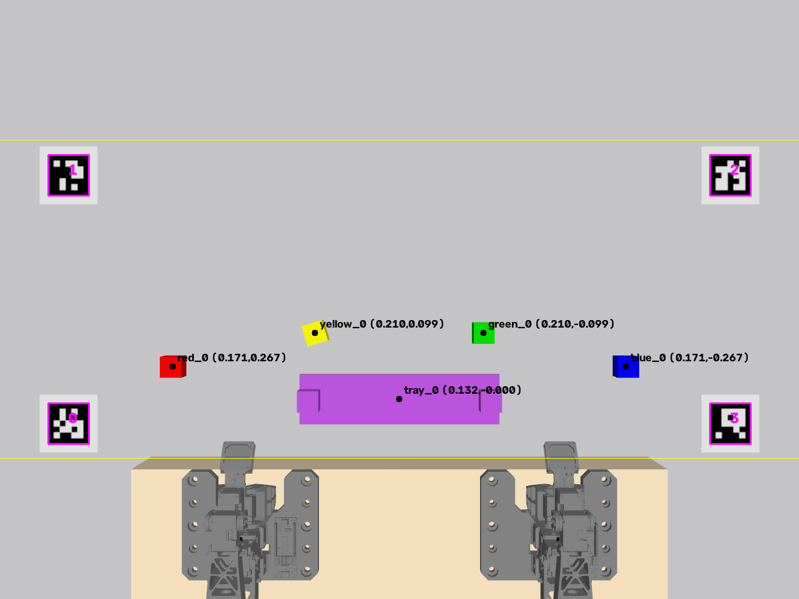
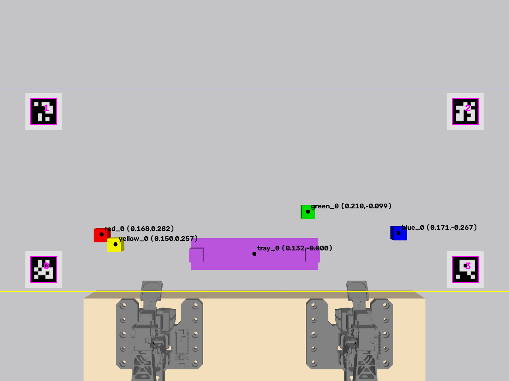
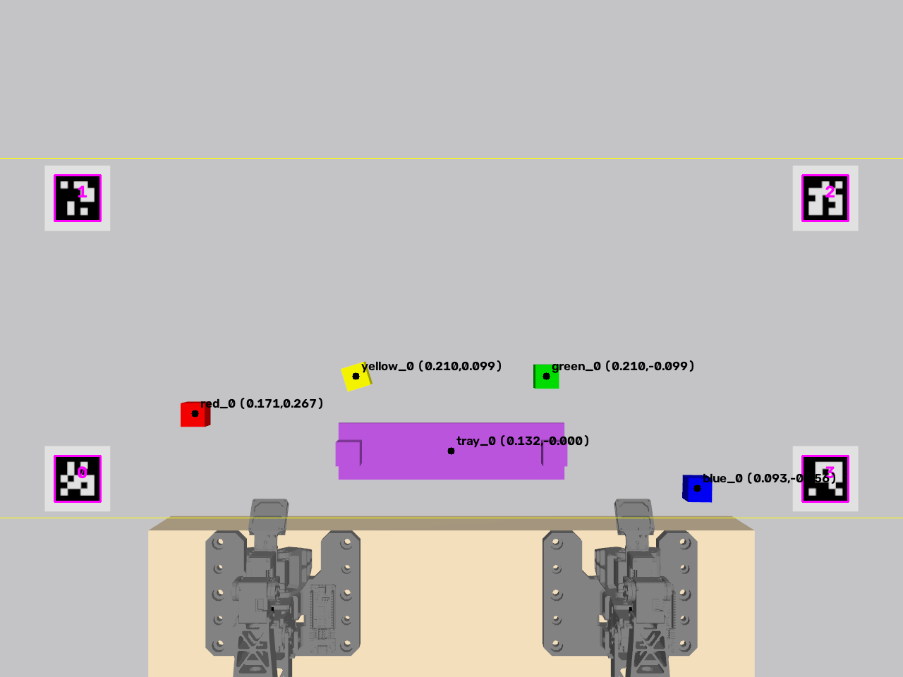
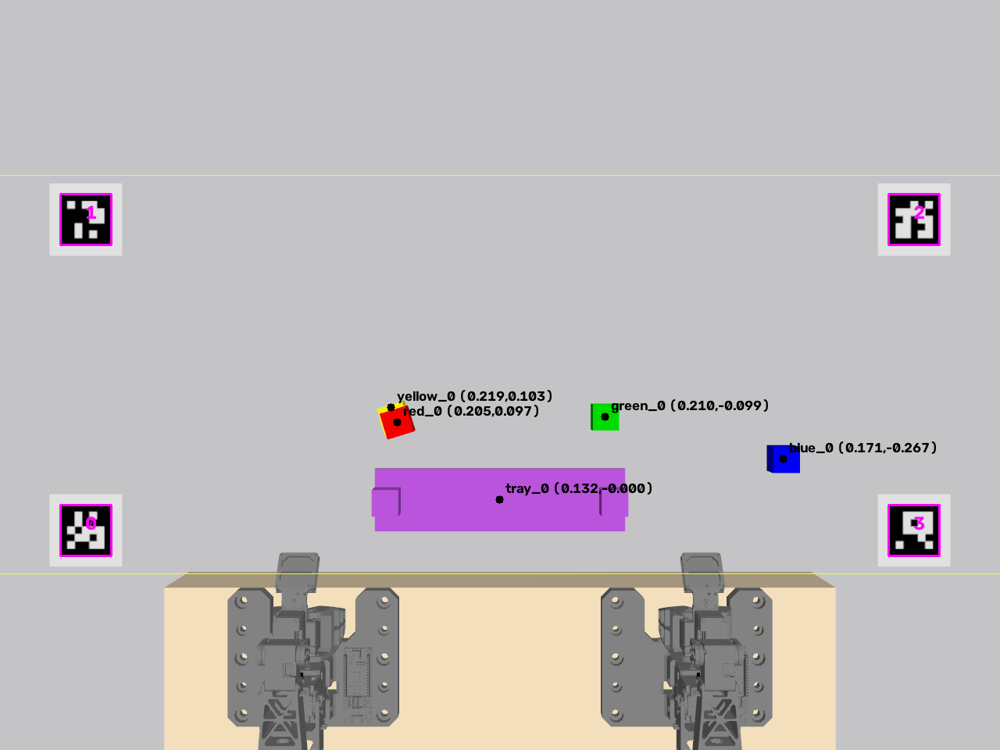
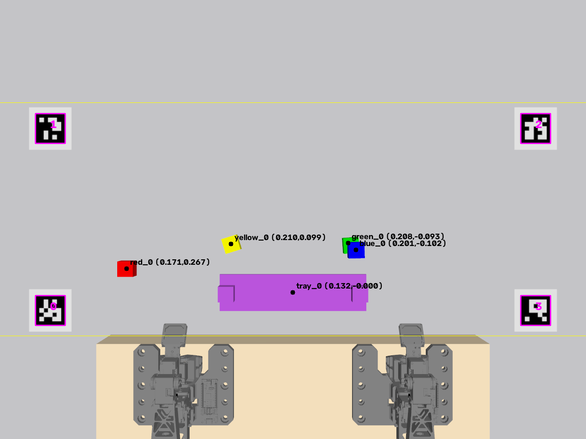
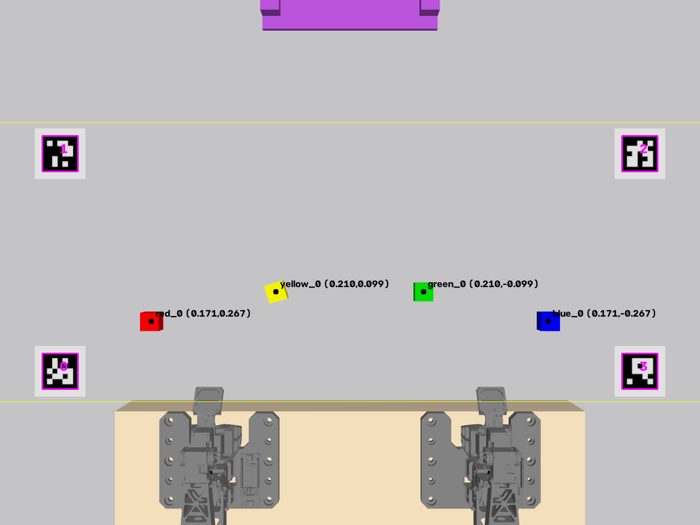
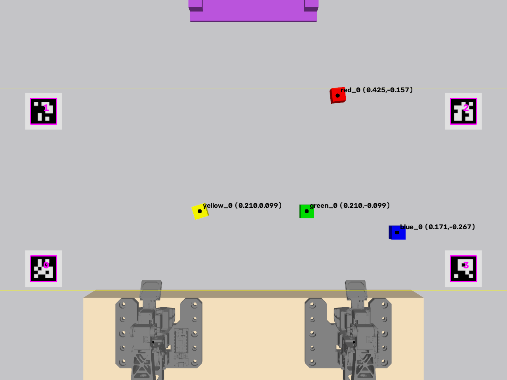
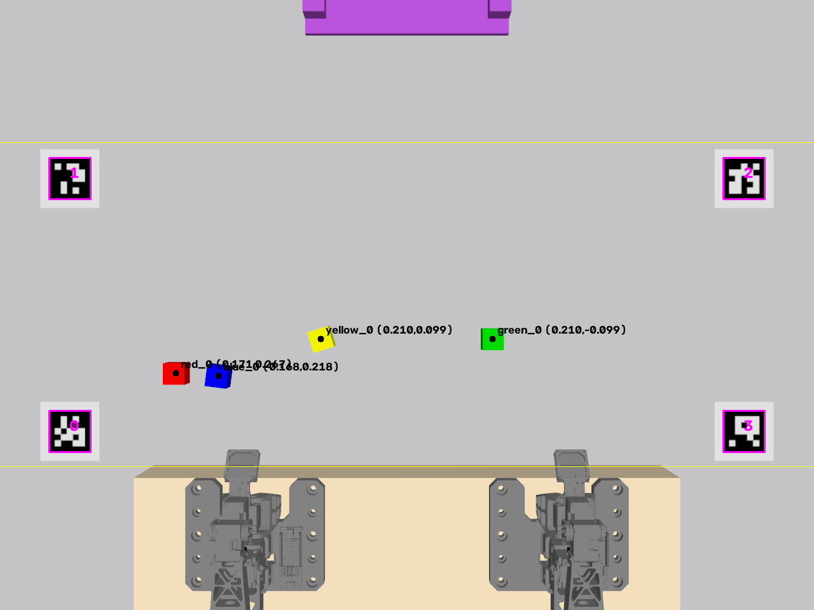
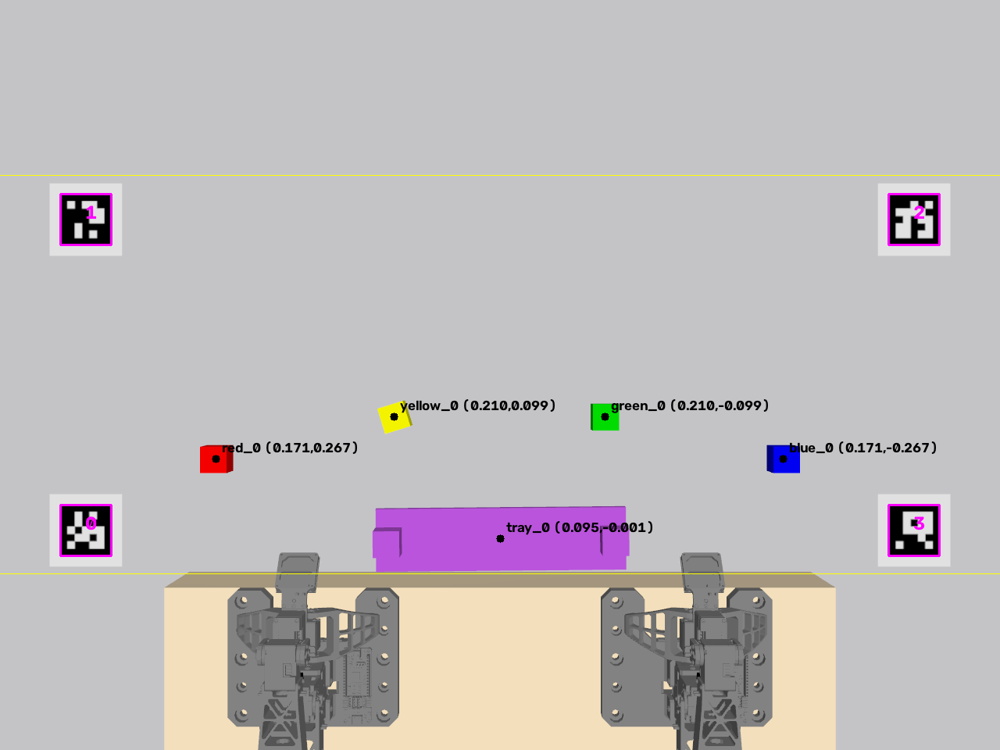
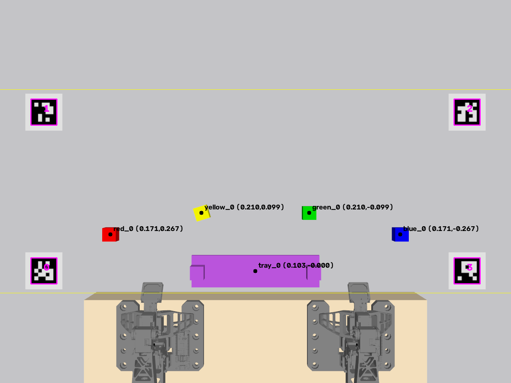
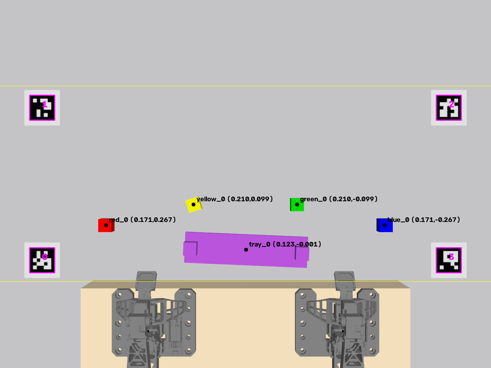
| 항목 | 판단 |
|---|---|
| 명령 해석 (LLM) | 계획이 저장된 성공 18건 모두 의도대로 해석(팔 지정·쌓기·전달 분할·트레이 운반 포함). 실패 4건도 기록된 팔 배정·단계 수가 의도와 같아, 실패는 해석이 아닌 동작 단계에서 발생. 평균 3.4 s |
| 안전·검증 | 실패 4건(1차 2, 최종 2) 모두 손목/탑뷰 카메라 검증이 감지. 거짓 성공 없음 |
| 위치 정확도 | 성공 시 대부분 4–9 mm, 전달·최종 단계는 최대 22 mm(누적) |
| 주요 위험 | 시뮬 집게의 미끄러짐/튕김(최종 10회 중 2회). 실물에서는 그리퍼 전류 제한으로 다시 측정 필요 |
다음 단계: ① 실패 시 자동 재시도(카메라로 블록을 다시 찾아 1회 재집기) ② 시험 횟수를 늘려(동작당 10회) 통계 확보 ③ 실물 두 팔에서 같은 시험 세트 실행.
재현: python3 docs/tests/run_dual_suite.py docs/test_report all final → python3 docs/tests/make_report.py docs/test_report